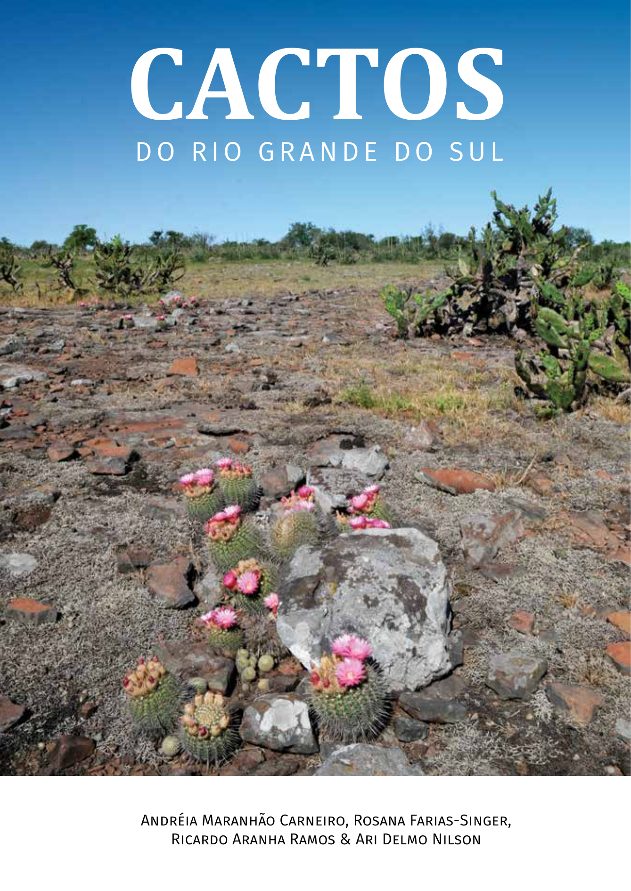

Sumário ▼
Lista de gêneros e espécies
Apresentação
I. Introdução
II. Cactos do Jardim Botânico de Porto Alegre
III. Distribuição geográfica
IV. Classificação e aspectos morfológicos dos cactos
V. Chave para os gêneros
VI. Caracterização das espécies
VII. Conservação e recomendações
Glossário
Referências
Cereus
▼
Cereus hildmannianus
Cereus hildmannianus subsp uruguayanus
Echinopsis
▼
Echinopsis oxygona
Epiphyllum
▼
Epiphyllum phyllanthus
Frailea
▼
Frailea buenekeri
Frailea buenekeri subsp densispina
Frailea castanea
Frailea cataphracta
Frailea curvispina
Frailea fulviseta
Frailea gracillima
Frailea gracilima subsp horstii
Frailea mammifera
Frailea phaeodisca
Frailea pumila
Frailea pygmaea
Frailea pygmaea subsp albicolumnaris
Frailea schilinzkyana
Gymnocalycium
▼
Gymnocalycium denudatum
Gymnocalycium horstii
Gymnocalycium hosrtii subsp buenekeri
Gymnocalycium uruguayense
Lepismium
▼
Lepismium cruciforme
Lepismium houlletianum
Lepismium lumbricoides
Lepismium warmingianum
Opuntia
▼
Opuntia assumptionis
Opuntia elata
Opuntia megapotamica
Opuntia monacantha
Parodia
▼
Parodia alacriportana
Parodia allosiphon
Parodia arnostiana
Parodia buiningii
Parodia concinna
Parodia crassigibba
Parodia erinacea
Parodia fusca
Parodia gaucha
Parodia glaucina
Parodia haselbergii
Parodia haselbergii subsp graessneri
Parodia herteri
Parodia horstii
Parodia langsdorfii
Parodia leninghausii
Parodia linkii
Parodia magnifica
Parodia mammulosa
Parodia mueller-melchersii
Parodia muricata
Parodia neoarechavaletae
Parodia neohorstii
Parodia nothorauschii
Parodia ottonis
Parodia ottonis subsp horstii
Parodia oxycostata
Parodia rechensis
Parodia rudibuenekeri
Parodia schumanniana
Parodia schumanniana subsp claviceps
Parodia scopa
Parodia scopa subsp neobuenekeri
Parodia scopa subsp succinea
Parodia stockingeri
Parodia tenuicylindrica
Parodia turbinata
Parodia warasii
Pereskia
▼
Pereskia aculeata
Rhipsalis
▼
Rhipsalis campos-portoana
Rhipsalis cereuscula
Rhipsalis floccosa
Rhipsalis floccosa subsp hohenauensis
Rhipsalis floccosa subsp pulviginera
Rhipsalis paradoxa
Rhipsalis teres
Schlumbergera
▼
Schlumbergera rosea
Última Página
‹
›

© 2016
Cactos do Rio Grande do Sul
© 2025 Desenvolvido por
Frederico Schäffer Petry